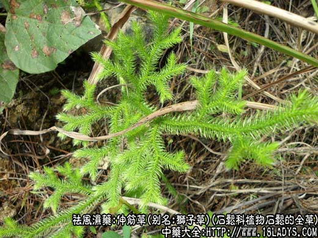
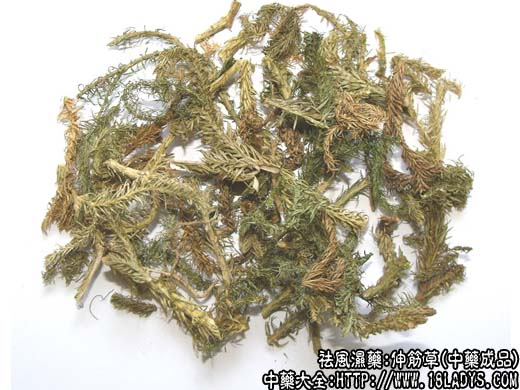
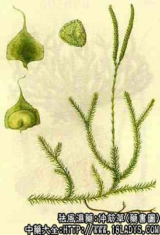

伸筋草为常用中药。始载《分类草药性》。
别名：石松、狮子草。
来源：为石松科植物石松的全草。其子（石松子）亦入药。均为野生。
产地：生产于湖北襄阳、孝感专区。此外，江苏、安徽、贵州等省亦产。
性状鉴别：伸筋草茎弯曲细长，处处生根，长约30~120厘米，直径约1~3毫米。形较扁，表面黄褐色。通常根上的外皮脱落后露出黄色心。茎上多分枝，向上如风尾，密生黄绿色的细长鳞叶，质柔而韧，不易折断，断面白色，外层有青黄色的薄皮。无臭、味淡。
以身干、茎长、黄绿色，无杂质者为佳。
主要成分：全草含石松碱、石松宁碱、菸碱、钾盐、伸筋草醇，此外，尚含挥发油及醣类等。
功效与作用：据抗菌试验，其石松碱成分对福氏痢疾杆菌、宋内氏痢疾杆菌高度敏感，对志贺氏痢疾杆菌中度敏感。
此外，石松也有利尿，增进尿酸排泄的作用，还能解除小儿之痉挛性潴尿溜及便秘。
炮制：切段、生用。
性味：苦、辛、温。
功能：祛风散寒、除湿消肿、舒筋活血。
主治：风寒湿痹，关节酸痛，皮肤麻木水肿、跌打损伤。
临床应用：伸筋草有祛风散寒、活血通路之功，治风湿痹痛、筋脉拘挛、跌打损伤等常与桑枝、威灵仙、五加皮等配伍以增强疗效；若用于跌打损伤，可与赤芍药、红花、苏木活血祛瘀药配伍同用。
使用注意：孕妇及出血过多者忌服。
用量：9~15g；或浸酒。外用：捣敷患处。
处方举例：1、治风痹筋骨不舒：伸筋草15g，水煎服。（《岭南采药录》）。
2、治关节酸痛、手足麻痹：伸筋草30g，丝瓜络15g，爬山虎15g，大活血9g，水、酒各半煎服。江西（《中草药学》）。
附：石松子
来源：同伸筋草。药作其孢子。
性状鉴别：干燥的孢子微细而疏松，呈粉末状，淡黄色，质轻，无吸湿性。于器皿中稍加振摇即易滑动。入水时浮于水面，煮沸则下沉。能浮在氯仿表面，但在松节油及纯乙醇中则下沉。吹入火焰中燃烧，有闪光及响声。无臭味。
主要成分：石松子（孢子）含脂肪油。油的成分为石松子油酸及多种不饱和脂肪酸的甘油酯。孢子中尚含纤维、木聚糖等。
药理作用：孢子口服1克/天，连服2天，可引起切除卵剿的大鼠出现动情期；其氯仿提取物也有雌激素样作用。
主治：皮肤糜烂。